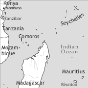

by Susanne Maria Michaelis and Marcel Rosalie

Seychelles Creole (autoglossonym: kreol (seselwa)) is a French-based creole language spoken by some 85,000 speakers in the Republic of the Seychelles, an archipelago of 110 islands spread over a region of 455 km² in the Indian Ocean (East of Kenya), and by an unknown number of diaspora speakers in Kenya, the United Kingdom, Australia, and New Zealand.
The uninhabited islands of the Seychelles were the last of the Indian Ocean islands to be settled; they were settled in 1770 by the French, mainly from Mauritius (settled in 1721), but also from Réunion Island (settled in 1664). The French settlers from Mauritius brought their slaves along with them to this new subcolony, which was ruled from Mauritius. During the first two decades, the colony was faced with various difficulties, but a demographic boom began around the late 1780s, when the economy changed from a mere exploitation of the natural resources to profitable agriculture (cotton, coffee, spices) (Nwulia 1981: 27). By 1791, there were 572 inhabitants on the islands: 65 Europeans, 20 free “coloured” people, and 487 slaves (Chaudenson 1979: 225). Due to a constant demand for servile labour, the population grew continuously, and by 1810 there were 317 European settlers, 135 free “coloured” people, and 3,015 slaves on the islands, as is shown in Table 1.
|
Table 1. Population figures for the Seychelles (1770–1817) |
|||
|
Europeans |
free ‘coloured’ people |
slaves |
|
|
1770: start of settlement |
15 |
6 |
7 |
|
1791 |
65 |
20 |
487 |
|
1810: start of illegal slave trade |
317 |
135 |
3,015 |
|
1817: peak of illegal slave trade |
no information |
no information |
7,323 |
After the Napoleonic Wars, with the Treaty of Paris in 1814, the Seychelles and Mauritius came under the rule of Britain, whereas Réunion remained under French rule.
After 1807 the slave trade was illegal in all British territories, but the colonial authorities found it difficult to implement this ban in the Seychelles and Mauritius. As a consequence, an illegal slave trade began to flourish in the Indian Ocean (Allen 2001: 93, 110). It is estimated that between 1811 and 1827 about 60,000 slaves were exported from Madagascar and East Africa to Mauritius and to the Seychelles (Allen 2001: 111). However, population data from Mauritius and the Seychelles seem to suggest a much lower figure (Philip Baker p.c.) and more research is needed.
After the abolition of slavery in 1835, the British Navy captured French ships continuing in the slave trade and set the slaves “free” in the Seychelles. This led to a considerable further influx of Bantu-speaking East Africans in the 19th century.
When the French colonists, who mainly came from Mauritius, settled the Seychelles in the 1770s, they and their slaves brought a kind of stabilized Mauritian Creole along with them. Therefore, Seychelles Creole can be characterized as an offshoot of Mauritian Creole. The two languages remain mutually intelligible.
As for possible substrate languages, one has to look first at the composition of the slave population during the colonization of Mauritius: During the first decades Malagasy slaves made up the majority except for the short period between 1730 and 1735, when most of the slaves came from Senegambia and the Slave Coast (see Baker 1982). It is only from the late 1760s onwards that more slaves were brought to Mauritius from East Africa than from Madagascar. By the time of the colonization of the Seychelles (1770), the slave trade with East Africa provided the great majority of the slaves taken to the Seychelles and the Mascarenes (i.e. Réunion and Mauritius), and this continued until the end of the century. The possible substrate languages would have been spoken across an area from the southernmost part of Somalia to the South of Mozambique. It also seems that the slavers took their slaves from places quite far inside the continent including the Sukuma/Nyamwezi-speaking area. Therefore some of the most probable substrate languages for Seychelles Creole are Swahili, Mwera, Makonde, Yao, Makua, and Sukuma/Nyamwezi.
In 1976, the Seychelles, which were a British colony, became independent, and since 1978 Seychelles Creole has been one of the three official languages besides English and French. Creole is the common language of about 99% of the population (see Fleischmann 2007). In 1982 it was introduced as a language of instruction in primary schools and has been used in different formal communication contexts, e.g. in the media (television, radio, newspapers) and in court. But during the last 15 years, the use of written varieties of Seychelles Creole has lost much of its former significance to English.
The first substantial text published in Seychelles Creole is a collection of La Fontaine’s fables, translated into Creole by Rodolphine Young (1860–1932).2 Her manuscript was edited by Bollée & Lionnet in 1983. The text may originate from the late 19th/early 20th century. In 1977, two grammars of Seychelles Creole appeared, Bollée (1977) and Corne (1977). In 1982, the first dictionary, Diksyonner kreol–franse, was published by D’Offay & Lionnet (1982); this has already seen a second edition (1999).
Seychelles Creole has a vowel system with ten oral vowels and three nasal vowels. Vowel length, which goes back to French V+r or i+j combinations, is distinctive, e.g. ta /ta/ ‘pile’ vs. tar /ta:/ ‘late’ (< French tard), pe /pe/ (progressive marker) vs. per /pɛ:/ ‘afraid’, bi /bi/ ‘goal’ vs. biy /bi:/ ‘bullet, pellet, ball’ (< French bille), bo /bo/ ‘beautiful’ vs. bor /bɔ:/ ‘border, side’, mo /mo/ ‘word’ vs. mor /mɔ:/ ‘to die’, fou /fu/ ‘mad’ vs. four /fu:/ ‘oven’. Nasalization (marked in the spelling by V+n) is not distinctive in front of nasal consonants, but is often marked nevertheless, e.g. fanm /fãm/ ‘woman’, nennen /nɛ̃nɛ̃/ ‘nose’.
|
Table 2. Vowels |
|||
|
front |
central |
back |
|
|
close |
i, i: <iy, ir> |
u <ou>, u: <our> |
|
|
close-mid |
e |
o |
|
|
open-mid |
ɛ̃ <en>, ɛ: <er> |
ɔ̃ <on>, ɔ: <or> |
|
|
open |
a, a: <ar>, ã <an> |
||
Seychelles Creole has 17 consonants:
|
Table 3. Consonants |
||||||
|
bilabial |
labio-dental |
dental/alveolar |
palatal |
velar |
||
|
plosive |
voiceless |
p |
t |
k |
||
|
voiced |
b |
d |
g |
|||
|
nasal |
m |
n |
ŋ <ng> |
|||
|
fricative |
voiceless |
f |
s |
|||
|
voiced |
v |
z |
ɣ /ʁ <r> |
|||
|
glide |
j <y>, j̃ <ny> |
w |
||||
|
lateral |
l |
|||||
The dental/alveolar t and d are palatalized before i: disab [ḑisab] ‘sand’, tinge [ƫiŋge] ‘a traditional dance’.
The phoneme /s/ has an allophone [h] which appears in very limited contexts, e.g. sa ‘this, that, the’ or son ‘his, her’, but only in non-citation form and in connected speech, e.g. dan sa later [in this soil] ‘in/on this soil’, may be pronounced [dã ha latɛ:].
Word stress is always on the last syllable. In some contexts where isolated words are uttered in an imperative speech act, we may find the stress on the first syllable, e.g. déor ‘get out of here’ (‘outside’), dévan ‘in front!’ (call for the bus driver to stop at the next bus stop). Interestingly, there is no stress opposition as found in Mauritian Creole for synonyms as in réfer ‘do again’ vs. refér ‘recover from an illness’ (cf. Baker & Kriegel 2012, this volume). In Seychelles Creole both verbs with the two different meanings show the same stress pattern, i.e. stress on the last syllable.
There is an official orthography which has been developed (based on Annegret Bollées proposals) and promoted by the Lenstiti Kreol, an institute which is responsible for the development and codification of the written language. The following conventions are used in the orthography: /u/ is rendered by <ou>, /ɣ/ is written <r>, /ŋ/ is written <ng>, /j/ is written <y>, and /j̃/ is written <ny>. As was mentioned above, nasalization is indicated by an <n> after the nasalized vowel, especially when it is contrastive.
Nouns are morphologically invariable, e.g. en zonm, de zonm ‘a/one man, two men’, zetwal ‘star(s)’, latab ‘table(s)’, disel ‘salt’. Many nouns contain an initial element that goes back to one of the French articles le, la, les, du, but these elements are inseparable and are part of the root, e.g. zomn ‘man’ (< French les hommes), latab ‘table’ (< French la table), disel ‘salt’ (< French du sel).
Natural gender can be expressed by adding mal ‘male’ and femel ‘female’ to a given noun: en mal bourik ‘a male donkey’, en femel bourik ‘a female donkey’.
Number marking: Depending on the context, count nouns can refer equally to singular and plural entities, e.g. latab ‘a table’ or ‘tables’. When the plural reference is important, the special plural word bann (< French bande ‘band, group’) can be used: bann latab ‘tables’, bann zonm ‘men, people’. In formal written Seychelles Creole, e.g. in newspaper articles, bann seems to have grammaticalized into a quasi-obligatory plural marker.
There is an indefinite article en preposed to the noun, e.g. en lakaz ‘a house’. We also observe the incipient use of the demonstrative sa as a definite article (pace Bollée 2004), as in (1).3
Here, sa is used in an associative context, which we take as one of the crucial functions of a definite article. The fish are mentioned in the context, but then sa gro zaret ‘this large bone’ refers to the fish in an associative manner. Nevertheless, one should stress that nouns which would be marked by a definite article in French or English are often not marked as definite in Seychelles Creole.
Generic nouns are not marked, e.g. Lion i manz gazel [lion pm eat gazelle] ‘Lions eat gazelles.’ (cf. the dummy predicate marker [pm] i in §7).
There is only one demonstrative, sa, which precedes the noun, as in sa dimyel ‘this honey’. There is no difference between adnominal and pronominal demonstratives (sa i zoli ‘this is nice’).
In possessive constructions, the adnominal possessives precede the noun and have the same form as the dependent subject pronouns, except for the 3sg (see Table 4), e.g. mon lakaz ‘my house’, son bato ‘his boat’. The pronominal possessives consist of the preposition pour and the independent personal pronoun:
Possessor noun phrases show two different constructions with no clear difference in meaning or distribution:
(i) The order is possessor – possessee with the possessor indexed on the head noun via the adnominal possessive pronoun (son lakaz):
(ii) The order is possessee – possessor with the possessor showing no marking:
A fairly rare construction among the languages of the world is the possessor climbing construction: Son pos palto [3sg.poss pocket coat] ‘the pocket of his coat’, lit. ‘his pocket coat’ (Corne 1977: 27). The possessive determiner is not adjacent to the relevant noun, but “climbs” up to the first noun in the nominal phrase.
Adjectives follow the noun (lalin kler ‘bright moon’, dilo so ‘hot water’), except for a small set of high-frequency adjectives which precede the noun (cf. Bollée 1977: 42ff.): En gran bato ‘a big boat’, en zoli garson ‘a handsome boy’, en zenn fiy ‘a young girl’. Adjectives do not agree in natural gender except for some rare cases, e.g. en zonm fou ‘a crazy man’ vs. en madanm fol ‘a crazy woman’. This is also true for adjectives expressing geographical origin, e.g. en zonm seselwa ‘a Seychelles man’, en fanm seselwaz ‘a Seychelles woman’, en lingwis nizeryen ‘a Nigerian linguist (male)’, en lingwis nizeryenn ‘a Nigerian linguist (female)’.
In comparative constructions of equality, the standard is marked either by ki or by koman, and the adjective is marked by osi, which can be omitted if the standard is marked by koman:
In the comparative construction of inequality, both adjective and standard are marked:
The superlative construction is made up of the comparative of inequality plus a universal standard parmi tou ‘all’:
Another possibility is to use the verb depas ‘surpass’ and the parameter of comparison is expressed by an abstract noun:
There are two sets of personal pronouns, dependent and independent personal pronouns. In Table 4, we have added the adnominal possessives, which differ only slightly from the two other patterns:
|
Table 4. Pronouns |
|||
|
dependent subject pronoun |
independent subject pronoun/object pronoun |
adnominal possessive |
|
|
1sg |
mon |
mwan |
mon |
|
2sg |
ou |
ou |
ou |
|
3sg |
i |
li |
son |
|
1pl |
nou |
nou |
nou |
|
2pl |
zot |
zot |
zot |
|
3pl |
zot |
zot |
zot |
The dependent pronouns occur only in subject position, whereas independent pronouns cover both subject and object position. The dependent and independent pronouns only differ in the 1sg and 3sg: mon vs. mwan, and i vs. li. There is no gender distinction in 3sg, i refers equally to male and female referents. There is person syncretism in the 2pl and 3pl (zot). As can be further seen from Table 4, adnominal possessive pronouns are homophonous with the subject pronouns, except for 3sg son (vs. i) ‘his/her’.
Pronoun conjunction: Seychelles Creole has a special conjoining construction (i.e. ‘and’ construction) when one of the conjuncts is a personal pronoun (especially a personal pronoun of the first person):
In such constructions, the second occurrence of the pronoun (here: nou) is obligatory.
Seychelles Creole has eight verbal markers relating to tense, aspect, and mood: Ti (past marker), in/’n (perfect marker), pe (progressive marker), a and pu (future markers), fek (immediate past marker), nek (continuative marker, ‘keep doing’), plus the zero marker. In Table 5, the different markers are displayed in relation to different aktionsart meanings of the verb. We need to distinguish between dynamic verbs (e.g. manze ‘eat’, vini ‘come’, bate ‘beat’), stative verbs (e.g. krwar ‘believe’, reste ‘stay, live’, konnen ‘know’), and adjectival verbs (e.g. malad ‘(be) ill’, mir ‘(be) ripe’, fatige ‘(be) tired’, rouz ‘(be) red’). In combination with the perfect marker in/’n, dynamic verbs refer to a past event with current relevance for the speech moment, e.g. zot in manze ‘they have eaten’. Some stative verbs receive a change of state interpretation when combined with in: mon konnen ‘I know’ vs. mon’n konnen ‘I have come to know’. Adjectival verbs with in also refer to a change of state resulting from a past event: Son figir in rouz ‘His face has become red.’ Table 5 summarizes the use of the verbal particles with different aktionsart verbs, their respective tense, aspect, and mood functions, and the French etymon of the Seychelles Creole particle.
|
Table 5. Tense-Aspect-Mood markers |
|||
|
marker |
aktionsart |
tense/aspect |
French etymon |
|
zero |
all (i.e. dynamic, stative, adjectival) |
– simple present – future – habitual present – generic present – perfective past |
|
|
pe |
dynamic |
– progressive present – future |
être après de/à |
|
adjectival |
– ongoing change of state (‘become’) |
||
|
ti |
all |
– simple past |
était, étais |
|
in/’n |
dynamic |
– perfect with current relevance |
finir de faire |
|
stative |
– completed change of state with current relevance |
||
|
a |
all |
– future |
(v)a faire |
|
pou |
all |
– future |
être pour faire |
|
nek |
all |
– continuative (‘keep doing’) |
ne faire que |
|
fek4 |
all |
– immediate past |
(ne) faire que |
Table 6 features the most common combinations of TAM particles.
|
Table 6. Some combinations of TAM particles |
|||
|
marker |
aktionsart |
tense/aspect |
modality |
|
ti’n |
all |
– past-before-past |
|
|
ti pe |
dynamic |
– progressive past |
|
|
adjectival |
– past ongoing change of state (‘was becoming’) |
||
|
a’n |
dynamic, adjectival |
– perfect future with current relevance – future resultative with current relevance |
|
|
ti a |
all |
counterfactual |
|
|
ti a’n |
all |
counterfactual (past with current relevance) |
|
|
ti pou |
all |
– future in the past |
|
Zero-marked verbs refer to the present, regardless of their aktionsart. Narrative contexts constitute an exception: After the stage of the narrative has been set in the past, dynamic verbs, stative verbs, and adjectives are zero-marked and receive a past interpretation.
The difference between the use of ti (past marker) and in (perfect marker, with current relevance) can be seen in the following minimal pair:
The verbal negation particle pa precedes all verbal markers but follows the personal pronoun or noun in subject position:
Indefinite pronouns co-occur with the negation particle:
Table 7 summarizes the different construction types and verbs which render the four different types of modality. The verbs kapab ‘can’ (< French capable), bezwen ‘need’ (< French besoin), and dwatet ‘must’ (< French doit être) can express all four modalities:
|
Table 7. Modality |
||
|
different kinds of modality |
construction |
examples |
|
participant-internal modality (possibility/necessity) |
kapab bezwen dwatet fodre + sentence |
Koze i pa ti kapab. speak 3sg neg pst can ‘He could not speak.’ |
|
participant-external modality: deontic (permission / obligation) |
kapab bezwen dwatet |
Ou bezwen al lopital. 2sg need go hospital ‘You have to go to hospital.’ |
|
participant-external modality: root possibility |
kapab bezwen dwatet |
Dimoun pa kapab ariv ditou. people neg can arrive at.all ‘The people cannot land at all (because of external obstacles).’ |
|
epistemic (uncertainty /probability) |
kapab bezwen dwatet |
(i) Pyer i kapab arive. Peter pm can arrive ‘Peter may arrive.’ (ii) Mon’n bezwen perd li laba. 1sg.prf need loose it there ‘I must have lost it there.’ (iii) I dwatet sorti Ladig. 3sg must come.from La.Digue. ‘He must come from La Digue.’ |
(Cf. Kriegel et al. 2003)
The position of TAM markers does not differ in epistemic and non-epistemic uses of the modal verbs (see ex. 14–15).
Epistemic reading
Non-epistemic reading
This is in sharp contrast to Mauritian Creole, where a different positional TAM marking is observed (cf. Baker & Kriegel 2012, this volume).
Seychelles Creole generally uses no copula. Predicative adjectives, predicative noun phrases, and predicative locative phrases are directly combined with a tense-aspect-mood particle, without a copula.
The dummy predicate marker i cannot be considered a copula because it also occurs in clearly verbal contexts, e.g. Lydia i vini. ‘Lydia comes’ (see §7).
However, when the predicative phrase is fronted (as in questions and focus constructions), the copula ete is used, e.g. Kote ou ete? ‘Where are you?’
The word order at clause level is Subject – Verb – Object. The verb has a so-called long form and a short form: Sant vs. sant-e ‘sing’, vin vs. vin-i ‘come’. The short form is used when the verb is directly followed by a verbal argument, either a direct object (mon donn li en mang ‘I give him/her a mango’; long form donn-en) or a local adverbial (mon retourn lakaz ‘I return home’; long form retourn-en). When a verbal argument is present but does not follow the verb (because it is fronted), the verb is in the long form, as in (18).
With ditransitive verbs, Seychelles Creole displays a double-object construction (with no prepositional coding of either object), contrasting with the indirect object construction in French (donner qc à qn) (see Michaelis & Haspelmath 2003).
Experiencer verbs often show a transitive pattern (contrasting with the French source pattern using the preposition de): Mon per li ‘I am afraid of him/her’ (cf. French j’ai peur de lui), mon bezwen li ‘I need her/him’ (cf. French j’ai besoin de lui), mon kontan li ‘I love him’ (cf. French je suis content(e) de lui ‘I am happy with him’). See Michaelis (2008a) for some discussion of the possible Bantu origin of these patterns.
In Seychelles Creole there is a dummy predicate marker i in the 3sg and 3pl, which occupies the position directly to the left of the finite predicate when no tense-aspect-mood or negation marker is present.
(20) a. Pyer i manz mang. ‘Peter eats a mango/ mangoes.’
b. Pyer pa manz mang. ‘Peter doesn’t eat a mango/ mangoes.’
c. Pyer ti manz mang. ‘Peter ate a mango/ mangoes.’
d. Pyer pe manz mang. ‘Peter is eating a mango/ mangoes.’
Seychelles Creole has several construction types which cover the functional domain of a processual passive. In spoken discourse, the most widespread construction type is subject suppression, as in (21). Here, the subject position remains empty, and the object/patient remains in situ. There is a non-specific human agent reference which could be translated as ‘They sell houses’, ‘Houses are sold’.
In another construction type (cf. 22), the patient is promoted to subject position and the verb occurs in the long form:
In more formal discourse, there is a special passive construction with the auxiliary ganny (‘get’ < French gagner ‘earn, gain’) followed by the long form of the main verb.
Reflexive voice can be expressed by different constructions:
(i) no marking for body care and grooming verbs: I lave ‘he/she washes’;
(ii) ordinary object pronoun: I get li dan laglas ‘he looks at himself in the mirror’;
(iii) use of lekor (< French le corps ‘the body’): I deteste son lekor ‘he hates himself’;
(iv) use of the intensifier limenm (< French lui-même ‘him-self’): I vwar limenm dan laglas ‘he sees himself in the mirror’.
There is a special reciprocal voice coded with kanmarad (‘friend’ < French camarade):
Causative voice is coded by the verb fer ‘make’:
The causee (zanfan) is placed between the causative verb fer and the main verb (here: manze).
In content questions, the interrogative phrase is normally fronted:
However, some interrogative phrases can stay in situ, e.g. lekel ‘which one/who’, avek kwa ‘with what’.
Polar questions are normally only marked by a rise in the intonation, but they can be introduced by the question particle eski in more French-like varieties of Seychelles Creole.
In focus constructions, the focused element is moved to the left and followed by the relative particle ki. The focused element is optionally introduced by the highlighter se (< French c’est ‘it is’) and followed by the intensifier menm ‘self’:
Coordinating conjunctions are very rare in spontaneous spoken discourse. The most widespread construction type is juxtaposition of sentences. We also find a special kind of juxtaposition technique which we call integrative intonation (cf. Michaelis 1994: 45f):
In example (31), all three sentences are uttered under a single intonation contour. These integrative intonation constructions always show identical subjects, identical TAM marking (here: zero-marked), and identical polarity marking.
The sentential coordination conjunctions are e ‘and’ (mostly in written language, contrasting with ek for nominal conjunction), be, me ‘but’, and oubyen ‘or’.
With verbs of speaking and knowing, object clauses show zero-marking or marking by the complementizer poudir (< French pour dire ‘for saying’), however this latter marking seems to be much rarer (cf. Kriegel 2004). Directional complement clauses are marked by pour or zero (demann ‘to ask’, oule ‘to want’).
Adverbial clauses are introduced by the subordinators avan ‘before’, akoz ‘because’, kan ‘when’, si ‘if’, pangar ‘lest’, and others.
There is a special concessive construction which involves the preposition dan ‘in’ and a kind of nominalized verb phrase:
Relative clauses follow the head noun. There are different construction types relating to the different syntactic-semantic roles of the head noun in the relative clause, as shown in Table 8:
|
Table 8. Relative constructions |
|||
|
relativized element/ construction type |
no marking + gap |
pronoun/relative particle + gap |
relative particle + resumptive pronoun |
|
subject |
ki |
||
|
object |
zero + gap |
ki |
ki plus resumptive |
|
instrument |
pied-piping ek ki |
ki + gap + adposition stranding (avek) |
|
In example (33), the relativized element has the syntactic function of an object and is marked by ki. At the same time this object is taken up by the resumptive pronoun sa.
Example (34) shows an instance of pied-piping, i.e. the instrumental preposition is fronted together with the pronoun ki:
In example (35), we see a relative particle with a gap and adposition stranding:
Over 98% of the Seychelles Creole vocabulary can be traced back to standard French or dialectal, non-standard French varieties of the 17th and 18th centuries. Out of a word list of 1,460 meanings (cf. Michaelis with Rosalie 2009, Michaelis with Rosalie & Muhme 2009), some 35 words are of Bantu origin, e.g. toto ‘child’ < Swahili mtoto; kasoukou ‘parrot’ < Swahili kasuku. Some 25 words are borrowed/retained from Malagasy, e.g. kelkel ‘armpit’ < Malagasy hélika; kalou ‘pestle’ < Malagasy akalo; kanbar ‘yam’ < Malagasy kambara. Only a small number of words can be traced back to West African languages (e.g. makeket ‘kind of ant’, < Kongo). There are many dozen loanwords from English, e.g. ays ‘ice’; mice5 ‘mouse, rat’; sik ‘sick’. The most comprehensive work on the non-French sources of the lexicon of Réunion, Mauritian, and Seychelles Creole is the pioneering PhD thesis by Philip Baker (1982). He found a total of 1,026 Seychelles Creole words of non-French or unknown origin (for a detailed breakdown, see Baker 1982).
We would like to thank Philip Baker, Annegret Bollée, Martin Haspelmath, Sibylle Kriegel, and Philippe Maurer for very helpful comments on an earlier draft of this chapter.